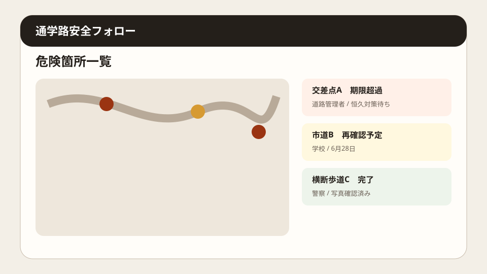
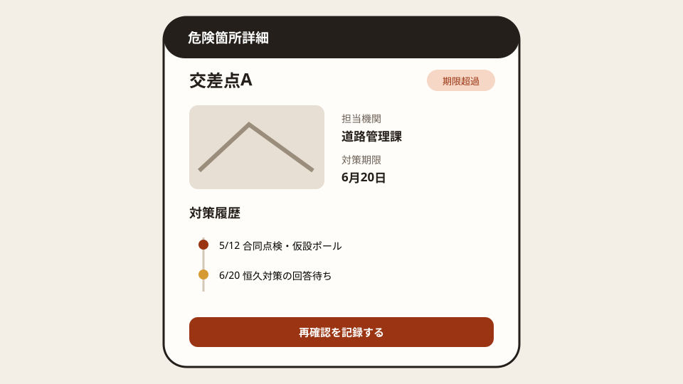

Question Note
通学路の危険箇所と対策完了を追跡する小規模サービス案


全体像
文部科学省は2025年6月、通学路合同点検後も暫定対策だった4,244か所の実施状況を確認し、関係機関の連携継続を求めました。社会問題は危険箇所の発見だけでなく、学校、教育委員会、道路管理者、警察の対策案・期限・完了証拠が分断されることです。
どの社会問題を切り出すか
初年度は近隣自治体の小中学校とPTAが扱う通学路危険箇所の受付から再確認に絞ります。
| 現場課題 | 何が起きるか | 既存手段の限界 |
|---|---|---|
| 同じ箇所が別名で届く | 重複集計や見落としが起きる。 | 紙地図と表計算では位置を統合しにくい。 |
| 担当機関が複数 | 誰の回答待ちか分からない。 | メールは案件全体の状態を示さない。 |
| 暫定対策後の確認が弱い | 現場で危険が残っても完了扱いになる。 | 写真と報告書が別々に保存される。 |
既存の仕組みで足りない点
- 紙は位置、写真、更新履歴を一体で扱えない。
- 電話やチャットは担当交代後に判断根拠が残りにくい。
- 表計算は複数機関の権限、期限通知、地図上の重複判定に弱い。
サービス案
危険箇所を地図で受け付け、合同確認、対策案、担当、期限、完了写真、再確認を一案件で追跡するWeb台帳です。
- 位置・時間帯・危険種別・写真を登録する。
- 近接投稿をまとめ、個人情報を除いて共有する。
- 教育委員会、道路管理者、警察ごとの担当と期限を持つ。
- 暫定・恒久対策を分け、期限超過を通知する。
- 学校・保護者向け公開一覧と年度報告を出す。
100万円規模に抑えた市場設定
近隣自治体・学校50組織を到達可能市場とし、20組織を獲得します。
| 項目 | 仮定 | 結果 |
|---|---|---|
| 初年度顧客 | 20組織 | 個別説明で運用可能 |
| 月額 | 4,000円 x 20 x 12 | 960,000円 |
| 導入支援 | 10,000円 x 6 | 60,000円 |
| 売上 | 合計 | 1,020,000円 |
収益モデル
- 基本: 学校・自治体単位の月額利用料
- 追加: 過去台帳の移行
- 追加: 年度報告テンプレート設定
AWSシステム要件と支出
東京リージョン、無料枠を除外、1 USD = 150円、20組織・200 MAU・月2万APIリクエストの概算です。実装前にAWS Pricing Calculatorで再計算します。
| AWSリソース | 用途 | 想定使用量 | 月額 | 年額 |
|---|---|---|---|---|
| S3 + CloudFront | Web画面、危険箇所写真、PDF配信 | 10GB、月10GB配信 | 800円 | 9,600円 |
| Cognito | 学校・自治体・警察の認証と権限 | 200 MAU | 300円 | 3,600円 |
| API Gateway | 危険箇所と対策状況のAPI | 月2万リクエスト | 300円 | 3,600円 |
| Lambda | 重複候補判定、期限通知、PDF生成 | 月2万実行 | 300円 | 3,600円 |
| DynamoDB | 地点、危険種別、担当機関、対策、期限、完了写真、再確認、変更履歴を保存 | オンデマンド1GB、月5万読書き | 500円 | 6,000円 |
| SES | 期限超過と再確認のメール | 月2,000通 | 100円 | 1,200円 |
| CloudWatch + Backup + Budgets | ログ、日次バックアップ、予算通知 | ログ1GB | 500円 | 6,000円 |
| Route 53 | DNS | 1ホストゾーン | 100円 | 1,200円 |
| Location Service | 危険箇所の地図表示 | 月1万地図リクエスト | 1,000円 | 12,000円 |
| AWS利用料 | 合計 | 3,900円 | 46,800円 | |
| 専門確認 | 個人情報・交通安全表現 | 単発 | - | 60,000円 |
| 年間支出 | 合計 | 106,800円 | ||
AIを使った開発見積もり
AIで画面案、CRUD、地図連携の雛形、帳票、テストを補助し、現場の責任分界と公開範囲は人が決めます。
| 作業 | AI活用 | 目安 |
|---|---|---|
| 要件整理 | 案件状態を構造化 | 4日 |
| 試作 | 地図・一覧を生成 | 2週間 |
| 実装 | 権限・通知・帳票を補助 | 2週間 |
| 検証 | テスト観点を生成 | 1週間 |
通常8〜10週間相当を5〜6週間に短縮する想定です。
売上・支出・利益
売上 - 支出 = 利益
| 売上 | 1,020,000円 |
|---|---|
| 支出 | 106,800円 |
| 利益 | 913,200円 |
必要人数と人材要件
実行者1名 + 単発外注で、実行者はWeb実装と行政・学校への聞き取りを担当し、個人情報と交通安全表現の確認を専門家へ外注します。
リスクと最初の検証
- 投稿が正式な改善確約と誤解される。
- 位置情報に児童の行動が含まれる。
- 既存の自治体台帳と二重入力になる。
3校・20案件・3か月で、重複整理時間、期限超過、再確認率、月額4,000円の支払い意思を検証します。
結論
危険箇所の通報アプリではなく、複数機関の対策完了と再確認を追う台帳に絞ることで、小規模でも安全改善の停滞を減らせます。